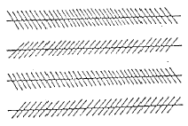
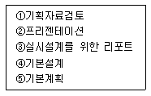
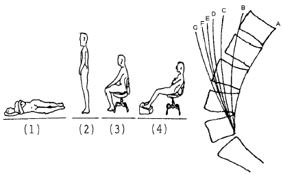
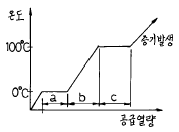

실내건축기사(구) (2004-05-23 기출문제)
1과목: 실내디자인론
1. 실내디자이너의 역할과 가장 거리가 먼 것은?
- 독자적인 개성의 표현을 한다.
- 전체 매스(mass)의 구조설비를 계획한다.
- 생활공간의 쾌적성을 추구하고자 한다.
- 인간의 예술적, 서정적 욕구를 만족시키고자 한다.
(정답률: 31%)

2. 실내디자인의 계획과정에 대한 설명 중 옳지 않은 것은?
- 기획이란 공간의 사용목적, 예산, 완성 후 운영에 이르기까지의 전체 관련사항을 종합 검토한다.
- 설계는 구체적이고 세부적인 검토를 하여 시공자, 제작자에게 제작,시공할 수 있도록 지시하는 실제적 과정이다.
- 계획은 공사감리 및 시공에 관한 분야를 집중적으로 다루는 마지막 과정이다.
- 설계는 기본설계와 실시설계로 구분한다.
(정답률: 82%)
3. 디자인 원리의 리듬과 가장 관계가 먼 것은?
- 반복
- 대립
- 통일
- 점층
(정답률: 42%)
4. 다음 실내디자인 원리 중 인간생활의 기능적 해결과 가장 밀접한 관계를 갖고 있는 것은?
- 비례
- 척도
- 조화
- 패턴
(정답률: 46%)
5. 주택의 부엌계획에 대한 설명 중 가장 부적합한 것은?
- 부엌의 위치는 서향이 되는 것이 가장 좋다.
- 주부의 동선이 단축되고 통풍이 잘 되도록 한다.
- 부엌의 작업대는 준비대 - 개수대 - 조리대 - 가열대 - 배선대 순서로 배치한다.
- 부엌의 면적이 좁을 경우 작업대 배치는 일자형이 좋다.
(정답률: 75%)
6. 오피스 오토메이션(office automation)의 기본 개념이 아닌 것은?
- 가구의 조립화
- 정보의 효율화
- 사무작업의 기계화
- 사무의 합리화
(정답률: 40%)
7. 동선계획의 3요소가 아닌 것은?
- 빈도
- 속도
- 재료
- 하중
(정답률: 알수없음)
8. 질감(texture)에 대한 설명으로 옳은 것은?
- 촉각에 의한 질감과 시각에 의한 질감으로 구분된다.
- 유리, 거울 같은 재료는 낮은 반사율을 나타내며 차갑게 느껴진다.
- 질감의 형성은 인공적으로만 이루어진다.
- 질감은 몇가지 유형으로 항상 일정하다.
(정답률: 93%)
9. 실내디자인의 프로세스중 아이디어를 스케치 하려고 할때 쓰이지 않는 작도법은?
- 스크래치 스케치(scratch sketch)
- 러프 스케치(rough sketch)
- 프리핸드 스케치(freehand sketch)
- 프리젠테이션 모델 스케치(presentation model sketch)
(정답률: 47%)
10. 다음 그림은 무엇을 나타내고자 하는 것인가?

- 인지현상
- 착시현상
- 공간지각현상
- 형태심리적현상
(정답률: 95%)
11. 실내의 채광조절을 위한 장치물이 아닌 것은?
- 베니션블라인드(venetain blind)
- 루버(louver)
- 글래스화이버(glass fiber)
- 글래스블록(glass block)
(정답률: 31%)
12. 6층 규모 백화점의 층별 상품배치 계획에 대한 내용 중 가장 적합치 못한 것은?
- 지하1층 : 식품점, 슈퍼마켓
- 1층 : 가구, 주방용품
- 2층 : 숙녀의류
- 6층 : 가전제품
(정답률: 74%)
13. 다음 설명 중 옳지 않은 것은?
- DK(Dining Kitchen)형은 작업대와 식탁의 거리가 짧아 식사전후의 일을 하는데 편리하다.
- LK(Living Kitchen)형은 거실과 식사 공간 사이에 간단한 스크린이나 칸막이 또는 식물로 심리적 차단을 하여 주는 것이 바람직하다.
- LDK(Living Dining Kitchen)형은 소요면적이 크므로 대규모 주택에 적합하다.
- DK(Dining Kitchen)형은 작업대가 노출되거나 조리시 냄새가 발생하는 등 이상적인 식사 분위기를 조성하기 어렵다.
(정답률: 70%)
14. 건물의 지붕부분에 채광 또는 환기를 목적으로 수평면이나 약간의 경사면을 두어 상부채광하는 형태로 최소의 크기로 최대의 빛을 받아들이는데 효과적인 것은?
- 측창 형식
- 천창 형식
- 정측창 형식
- 경사창 형식
(정답률: 53%)
15. 바닥의 기능을 설명한 것 중 틀린 것은?
- 생활을 지탱하는 기본적 요소이다.
- 사람과 물건을 지지한다.
- 공간의 영역을 조정할 수 있다.
- 바닥의 고저차가 없는 경우 다른 면보다 강조할 수 없다.
(정답률: 60%)
16. 좋은 빛의 환경을 위한 조건과 가장 거리가 먼 것은?
- 적절한 조도
- 연색성의 연출
- 글레어(galre)의 강조
- 눈부심의 방지
(정답률: 88%)
17. 실시 단계 이전의 과정에 속하는 작업의 범위가 다음과 같을 때, 그 순서가 옳게 된 것은?

- ① - ② - ③ - ④ - ⑤
- ① - ③ - ⑤ - ② - ④
- ① - ⑤ - ② - ④ - ③
- ① - ④ - ③ - ⑤ - ②
(정답률: 87%)
18. 상업공간 실내계획에 있어 기획 단계에서의 입지적 특성과 가장 관계가 먼 것은?
- 경합(競合) 지역의 유무
- 상권의 규모
- 출입을 위한 어프로치 동선
- 구매동기
(정답률: 59%)
19. 다음 중 디자인의 요소로서 점에 대한 설명이 틀린 것은?
- 같은 크기의 점이라도 놓이는 공간의 위치와 크기에 따라 각각 다르게 지각된다.
- 공간에 한 점을 두면 구심점으로서 집중효과가 생긴다.
- 기하학적으로 점은 크기와 위치만 있다.
- 많은 점을 일렬로 근접시키면 선으로 지각된다.
(정답률: 59%)
20. 다음 중 모듈에 관한 설명으로 적합한 것은?
- 모듈은 가구류나, 내부벽체에도 적용이 가능하나 융통성 있는 평면계획은 어렵다.
- 모듈을 설정하여 계획을 전개시키면 설계 작업이 단순화되어 용이하고 재료의 생산비용을 낮출 수 있다.
- 모듈이란 일종의 치수 특정단위로서 계획자가 정하는 절대적, 추상적인 기준의 단위이다.
- 근대적인 건축이나 디자인에 있어서 모듈의 단위는 프랭크 로이드 라이트가 황금비를 인체에 적용하여 만든 것이다.
(정답률: 64%)
2과목: 색채학
21. 우리나라 산업규격의 안전 색광 사용 통칙에 있어서 위험과 긴급을 표시하는 색광은?
- 노랑
- 빨강
- 녹색
- 자주
(정답률: 62%)
22. Moon-Spencer의 색채조화론에 대한 설명 중 틀린 것은?
- 조화는 동등조화, 유사조화, 대비조화로 구분된다
- 부조화는 제1부조화, 제2부조화, 눈부심(glare)이다
- 색채조화는 색상의 범위로만 국한되어 있다
- 색상에서 유사조화 범위는 7-12(100등분 색상)이다
(정답률: 20%)
23. 다음 중 장시간 머무는 대합실 등에 가장 적합한 색은?
- 진출색
- 한색계
- 난색계
- 고채도의 색
(정답률: 39%)
24. 색조(tone)의 개념에 대한 올바른 설명은?
- 채도를 나타내는 개념
- 색상과 명도를 포함하는 복합개념
- 명도와 채도를 포함하는 복합개념
- 명도를 나타내는 개념
(정답률: 24%)
25. 남색의 먼셀기호와 가장 가까운 것은?
- 5PB 3/12
- 5B 4/8
- 10P 4/10
- 10RP 5/10
(정답률: 59%)
26. 빨강 사과가 빨갛게 느끼는 이유로 다음 설명 중 옳은 것은?
- 사과 표면에 비친 빛 중 빨강 파장은 흡수, 나머지는 반사하기 때문
- 사과 표면에 비친 빛 중 빨강 파장은 투과, 나머지는 흡수하기 때문
- 사과 표면에 비친 빛 중 빨강 파장은 반사, 나머지는 흡수하기 때문
- 사과 표면에 비친 빛 중 빨강 파장은 굴절, 나머지는 반사하기 때문
(정답률: 82%)
27. 색의 대비현상에 관한 기술 중 가장 타당성이 높은 것은?
- 면적 대비란 면적이 커지면 명도 및 채도가 더 낮아 보이는 현상이다
- 계시 대비란 먼저 본 색의 영향으로 나중에 보는 색이 다르게 보이는 현상이다
- 한난 대비란 한색은 따뜻하게 보이고, 난색은 차게 보이는 현상이다
- 연변 대비란 두 색이 붙어있는 경계부분에서 색의 대비가 더욱 약하게 보이는 현상이다
(정답률: 58%)
28. 색의 혼합에서 그 결과가 혼합전의 색보다 명도가 높아지는 것은?
- 색광혼합
- 색료혼합
- 병치혼합
- 중간혼합
(정답률: 48%)
29. 색의 삼속성에 관한 기술 중 잘못된 것은?
- 색상환에서 정반대쪽에 위치한 색은 보색이다
- 명도는 고명도, 중명도, 저명도로 나눈다
- 채도가 가장 높은 색을 백색이라고 한다
- 무채색의 채도는 0이다
(정답률: 78%)
30. 색의 온도감에 관한 내용 중 잘못된 것은?
- 유채색의 경우 중성색은 온도감이 느껴지지 않는다
- 장파장보다 단파장 쪽의 색이 차게 느껴진다
- 일반적으로 명도보다 색상에 의한 효과가 크다
- 무채색의 경우 명도가 높으면 따뜻하게 느껴진다
(정답률: 29%)
31. 조명에 의하여 물체의 색을 결정하는 광원의 성질은?(오류 신고가 접수된 문제입니다. 반드시 정답과 해설을 확인하시기 바랍니다.)
- 조명성
- 기능성
- 연색성
- 조색성
(정답률: 7%)
32. 다음 색 중 백색배경에서 가장 명시도가 낮은 색은?
- 황색
- 보라색
- 파랑색
- 청보라색
(정답률: 77%)
33. 관용색명에 대한 다음 설명 중 잘못된 것은?
- 습관상으로 사용하는 색으로 계통색명이라고도 한다
- 하양, 검정, 빨강 등이 있다
- 황(黃), 청(靑), 적(赤) 등이 있다
- 금색, 은색, 호박색 등이 있다
(정답률: 20%)
34. 비누 거품이나 전복 껍질 등에서 무지개 같은 색이 나타나는 것을 볼 수 있는데 이것은 빛의 어떠한 현상에 의해 나타나는 색인가?
- 왜곡현상
- 투과현상
- 간섭현상
- 직진현상
(정답률: 70%)
35. 올림픽 마크의 5대양주 색은 어떤 성질을 이용한 것인가?
- 시대성
- 상징성
- 기호성
- 기억성
(정답률: 88%)
36. 크기가 같은 라디오에 다음과 같이 채색되었을 때 가장 크게 느껴지는 것은? (단, 명도는 같다.)
- 밝은 회색 라디오
- 밝은 녹색 라디오
- 밝은 보라색 라디오
- 밝은 노랑색 라디오
(정답률: 54%)
37. 저드(Judd, D.B.)가 주장하는 색채조화의 네 가지 원칙이아닌 것은?
- 질서성의 원리
- 모호성의 원리
- 동류성의 원리
- 친근성의 원리
(정답률: 67%)
38. 먼셀 색입체에 관한 기술 중 옳은 것은?
- 채도는 색입체의 중심에서 원둘레 방향으로 가면서 점점 높아진다
- 색입체에서 채도는 위로 올라갈수록 높아진다.
- 색입체 중심축의 맨 위에는 검정색이 위치한다.
- 색입체를 임의의 위치에서 자른 수평단면은 동일채도면이다.
(정답률: 38%)
39. 채도에 관한 설명 중 옳은 것은?
- 채도는 흰색을 섞으면 높아지고 검정색을 섞으면 낮아진다.
- 채도는 색의 선명도를 나타낸 것으로 무채색을 섞으면 낮아진다.
- 채도는 색의 밝은 정도를 말하는 것이며, 유채색끼리 섞으면 높아진다.
- 채도는 그림물감을 칠했을 때 나타나는 효과이며, 흰색을 섞으면 높아진다.
(정답률: 40%)
40. 색채에 있어서 수반 감정은 색채가 인간에게 미치는 기본적인 효과를 말한다. 색이 수반하는 감정에 관한 다음 설명 중 가장 거리가 먼 것은?
- 난색계의 채도가 높은 색은 흥분을 유발시킨다.
- 장파장 쪽의 색이 따뜻하게 느껴진다.
- 저명도의 색은 무겁게 느껴진다.
- 개인별로 느낌의 차이가 대단히 많다.
(정답률: 62%)
3과목: 인간공학
41. 다음 중 관절운동의 정의로 맞는 것은?
- 중앙회전(medial rotation): 신체의 중앙에서 바깥으로 회전하는 운동
- 측회전(lateral rotation): 신체의 바깥에서 중앙으로 회전하는 운동
- 손의 외전(supination): 손바닥을 밑으로 해서 아래팔을 회전하는 운동
- 내전(adduction): 신체의 부분이 신체의 중앙이나 그것이 붙어있는 방향으로 움직이는 동작
(정답률: 64%)
42. 일반적으로 정확성을 요구하지 않는 동작의 CD(Control Display) 비율에 맞는 것은?
- 1 : 1 에 가까워야 한다.
- 1 : 2 에 가까워야 한다.
- 1 : 5 에 가까워야 한다.
- 1 : 10 에 가까워야 한다.
(정답률: 50%)
43. 인간의 시각적 구조 중 색을 구별하게 하는 요소는?
- 망막
- 동공
- 간상세포
- 추상세포
(정답률: 46%)
44. 자극간의 차이를 알수 있는 것과 알수 없는 것의 한계에 있는 자극변화량을 말하는 것은?
- 변별역
- 정비역
- 자극역
- 등치역
(정답률: 24%)
45. 사람이 자동차나 비행기를 조종할 때 긴장감의 정도를 파악하기 위하여 심박수, 호흡율, 뇌전위, 혈압 등을 조사 하는데, 이는 다음 중 어느 것을 지표로서 이용하는 경우인가?
- 심리적 변화
- 육체적 변화
- 생리적 변화
- 정신적 변화
(정답률: 75%)
46. 계기판의 지침(指針)으로 가장 부적합한 것은?
(정답률: 74%)
47. 다음 인간공학의 연구분석방법 중 직접적 관찰법과 관련이 없는 것은?
- Time Motion Study에 의한 방법
- A.I.O(Activities Interest Opinion)
- 조사자의 의견, 면접 또는 제안에 의한 방법
- Layout(flow-diagram)에 의한 방법
(정답률: 39%)
48. 지침설계의 요령 중 잘못된 것은?
- 뽀족한 지침을 사용한다.
- 지침의 색은 선단에서 눈금의 중심까지 칠한다.
- 지침을 눈금면과 밀착시킨다.
- 지침의 끝은 큰눈금과 약간 맞닿고 겹치도록 해야한다.
(정답률: 34%)
49. 다음 중 음의 단위가 아닌 것은?
- phon
- sone
- dB
- hue
(정답률: 78%)
50. 촉각, 온각, 냉각에 대한 설명 중 잘못된 것은?
- 피부의 온도순응은 동시에 이루어진다.
- 정상적인 피부표면은 36℃이다.
- 위치의 지각은 손, 발, 입술 등이 예민하다.
- 완전하게 순응되는 온도를 넘으면 부분적 순응이 이루어진다.
(정답률: 알수없음)
51. 사람의 작업성능에 대한 소음의 영향 중 옳은 것은?
- 특정한 의미가 없는 일정소음이 90dB(A)를 초과하지 않을 때는 작업을 방해하지 않는 것으로 본다.
- 암순응과 같은 감각의 반응은 소음에 직접적인 영향을 받는다.
- 소음은 작업의 정밀도의 저하보다는 총작업량을 저하시키기 쉽다.
- 단순작업은 복잡한 작업보다 소음에 의해 나쁜 영향을 받기 쉽다.
(정답률: 50%)
52. 눈의 동공은 카메라의 무엇과 비슷한가?
- 샤터
- 조리개
- 렌즈
- 필름
(정답률: 53%)
53. 인간은 날씨가 덥거나 심한 육체적 활동 후 땀을 흘림으로써 체온을 조절하게 되는데 이는 다음 중 어떠한 열교환 현상과 관련이 있는가?
- 전도
- 대류
- 복사
- 증발
(정답률: 60%)
54. 인체의 자세와 요추의 변화 중 그림 B에 해당되는 것은?

- (1)
- (2)
- (3)
- (4)
(정답률: 43%)
55. VDT(Visual Display Terminal)의 사용에 있어 적당한 주변의 조도는?
- 1000 lux 이상
- 600 ~ 800 lux
- 300 ~ 500 lux
- 300 lux 미만
(정답률: 50%)
56. 다음 중 음성전송 계통에서 생기지 않는 왜곡은?
- 주파수 왜곡
- 여파
- 진폭 왜곡
- 공진
(정답률: 50%)
57. 신체역학에서 신체부위간의 각도가 감소하는 동작을 부를때 사용되는 단어는?
- 굴곡(flexion)
- 신전(extention)
- 하향(pronation)
- 외전(adduction)
(정답률: 47%)
58. 다음 중 황금분할(golden section) 혹은 황금비와 관련이 있는 것은?
- 1 : 1.618
- 1 : 2
- 1 : 2.145
- 1 : 3
(정답률: 82%)
59. Miller는 인간의 절대식별 한계를"magical number7 ± 2"라 하였는데 이것의 의미는?
- 장기기억의 한계
- 작업기억의 한계
- 감각보관의 한계
- 감각수용기의 한계
(정답률: 67%)
60. 시각표시장치 보다 청각표시장치를 쓰는 것이 유리한 경우는?
- 메시지가 복잡한 경우
- 메시지가 후에 다시 참조되는 경우
- 메시지가 즉각적인 행동을 요구하는 경우
- 메시지가 공간적인 위치를 이루는 경우
(정답률: 93%)
4과목: 건축재료
61. 기둥, 벽 등의 모서리를 보호하기 위하여 미장바름질 할 때 붙이는 보호용 철물은?
- 코너비드(corner bead)
- 미끄럼막이(non slip)
- 인서트(incert)
- 줄눈대(joiner)
(정답률: 85%)
62. 대리석에 관한 기술로 적당하지 않은 것은?
- 산에 약하다.
- 실내장식재, 조각재로 사용된다.
- 주성분은 탄산석회이다.
- 수성암에 속한다.
(정답률: 50%)
63. ALC의 일반적 성질에 대한 설명 중 옳지 않은 것은?
- 기공구조이기 때문에 흡수율이 높은 편이다.
- 열전도율은 보통콘크리트의 약 1/10 정도이다.
- 경량으로 인력에 의한 취급은 가능하지만, 현장에서 절단 및 가공은 불가능하다.
- 건조수축률이 작고 균열발생이 어렵다.
(정답률: 67%)
64. 고온소성의 무수석고를 화학처리한 것으로 경화 후 아주 단단하며 킨스시멘트라고도 부르는 것은?
- 경석고 플라스터
- 혼합석고 플라스터
- 소석고 플라스터
- 돌로마이트 플라스터
(정답률: 50%)
65. 합성수지 재료에 관한 기술 중 틀린 것은?
- 에폭시수지는 내약품성이 없으므로 실험실 등의 도료로서 적당치 않다.
- 요소수지는 무색이어서 착색이 자유롭고 내수성이 크며 내수합판의 접착제로 사용된다.
- 불포화 폴리에스테르수지는 전기절연성, 내열성이 우수하고 특히 내약품성이 뛰어나다.
- 염화비닐수지는 -10℃ 정도의 저온이 되면 유연성이 줄어들고 70℃~80℃의 고온에서는 연화된다.
(정답률: 65%)
66. 굳지 않은 콘크리트의 성질을 나타낸 용어에 대한 기술 중 틀린 것은?
- 펌퍼빌리티(pumpability)는 펌프용 콘크리트의 워커빌리티를 판단하는 하나의 척도로 사용된다.
- 워커빌리티(workability)는 작업의 난이도를 나타낸다.
- 플라스티서티(plasticity)는 수량에 의해서 변화하는 콘크리트 유동성의 정도이다.
- 피니셔빌리티(finishability)는 마무리하기 쉬운 정도를 말한다.
(정답률: 16%)
67. 유리의 일반적 성질에 대한 설명 중 틀린 것은?
- 청결한 창유리의 흡수율은 2~6%이나 두께가 두꺼울수록 또는 불순물이 많고 착색이 진할수록 크게 된다.
- 일반적으로 전도율 및 팽창계수는 크고 비열은 적으므로, 부분적으로 급히 가열하거나 냉각하면 파괴되기 쉽다.
- 창유리 등의 소다석회유리의 비중은 약 2.5로 석영보다 약간 가볍다.
- 전기에 대해서는 건조상태에서 부도체이나 공중의 습도가 많게 되면 유리 표면에 습기가 흡착되므로 절연성이 적어진다.
(정답률: 10%)
68. 알루미늄에 관한 기술 중 옳지 않은 것은?
- 반사율이 극히 크므로 열 차단재로 쓰인다.
- 내화성이 적고 산에 침식되기 쉽다.
- 알칼리에 침식되지 않아 콘크리트에 접하여 사용할수 있다.
- 압연, 인발 등의 가공성이 좋다.
(정답률: 34%)
69. 합성수지 중에서 열경화성수지가 아닌 것은?
- 멜라민수지
- 페놀수지
- 폴리스티렌수지
- 요소수지
(정답률: 21%)
70. 급경성으로 내알칼리성 등의 내화학성이나 접착력이 크고 또한 내수성이 우수하며 금속, 석재, 도자기, 글라스, 콘크리트, 플라스틱재 등의 접착에 모두 사용되는 합성수지질 접착제는?
- 에폭시수지 접착제
- 요소수지 접착제
- 카세인
- 멜라민수지 접착제
(정답률: 79%)
71. 포틀랜드시멘트 클링커에 철용광로로부터 나온 슬래그를 급랭한 급랭슬래그를 혼합하여 이에 응결시간 조정용 석고를 혼합하여 분쇄한 것으로, 수화열량이 적어 매스콘크리트용으로도 사용할 수 있는 시멘트는?
- 알루미나시멘트
- 보통포틀랜드시멘트
- 조강시멘트
- 고로시멘트
(정답률: 54%)
72. 폴리머시멘트란 시멘트에 폴리머를 혼입하여 콘크리트의 성능을 개선시키기 위하여 사용되는데, 다음 중 개선되는 성능과 가장 거리가 먼 것은?
- 내열성
- 방수성
- 내약품성
- 변형성
(정답률: 17%)
73. 다음 중 유성 목재방부제로 철류의 부식이 적고 처리재의 강도가 감소하지 않는 조건을 구비하고 있으나 악취가 나고, 흑갈색으로 외관이 불미하므로 눈에 보이지 않는 토대, 기둥 등에 이용되는 것은?
- 크레오소트 오일
- 황산동 1% 용액
- 염화아연 4% 용액
- 불화소다 2% 용액
(정답률: 83%)
74. 원칙적으로 풀 또는 여물을 사용하지 않고 물로 연화하여 사용하는 것으로 공기 중의 탄산가스와 결합하여 경화하는 미장재료는?
- 회반죽
- 돌로마이트 플라스터
- 혼합 석고플라스터
- 보드용 석고플라스터
(정답률: 29%)
75. 저급점토, 목탄가루, 톱밥 등을 혼합하여 성형후 소성한것으로 단열과 방음성이 우수한 벽돌은?
- 내화벽돌
- 보통벽돌
- 중량벽돌
- 경량벽돌
(정답률: 47%)
76. 연강 철선을 전기 용접하여 정방형 또는 장방형으로 만들어 블록을 쌓을 때나 보호 콘크리트를 타설할 때 사용하여 균열을 방지하고 교차 부분을 보강하기 위해 사용하는 금속제품은?
- 와이어로프
- 코너비드
- 와이어메시
- 메탈폼
(정답률: 79%)
77. 목재 건조의 목적 및 효과에 대한 설명 중 옳지 않은 것은?
- 강도의 증진
- 중량의 경감
- 변형의 증진
- 균류 발생의 방지
(정답률: 74%)
78. 철골, 철근, 강판 등은 다음 중 어떤 강으로 주로 만들어지는가?
- 연강
- 최경강
- 경강
- 반경강
(정답률: 31%)
79. 다음 도료 중 내알칼리성이 가장 적은 도료는?
- 페놀수지도료
- 멜라민수지도료
- 초산비닐도료
- 프탈산수지에나멜
(정답률: 22%)
80. 목재 또는 식물질을 절삭, 파쇄하여 작은 조각으로 하여 충분히 건조시킨후 유기질 접착제인 합성수지 접착제를 첨가 혼합하여 열압제판한 목재의 가공품은?
- 파티클보드
- 집성목재
- 연질섬유판
- 경질섬유판
(정답률: 74%)
5과목: 건축일반
81. 철골구조에 대한 설명으로 옳지 않은 것은?
- 균등한 품질을 기대할 수 있다.
- 강재는 길이에 비해 두께가 얇아 좌굴을 일으킬 수있다.
- 본질적으로 조립구조이므로 부재간의 접합에 특히 주의해야 한다.
- 내화성이 커서 고열에도 강도가 저하되지 않으며 내구성이 있다.
(정답률: 40%)
82. 각 층의 바닥면적이 각각 1,500m2인 12층의 사무소 건축물에 설치해야 하는 승용승강기의 최소 대수는? (단, 승용승강기는 8인승이며, 거실의 바닥면적은 각 층별 바닥면적의 65 %이다.)
- 6대
- 5대
- 4대
- 3대
(정답률: 17%)
83. 조적조의 줄눈에 대한 일반적인 설명으로 옳은 것은?
- 보강블록조에서는 통줄눈은 사용치 않는다.
- 벽면이 고르지 않을 때는 오목줄눈으로 한다.
- 벽돌의 형태가 고르지 않을 때는 민줄눈으로 한다.
- 막힌줄눈은 상부의 하중을 전벽면에 골고루 균등하게 분포시킨다.
(정답률: 35%)
84. 조선시대의 주심포 양식 건물과 거리가 먼 것은?
- 창경궁 명정전
- 부석사 조사당
- 봉정사 화엄강당
- 정수사 법당
(정답률: 25%)
85. 특수장소에 사용하는 재료 중 방염대상물품이 아닌 것은?
- 카페트
- 전시용 섬유판
- 칸막이용 합판
- 종이 벽지
(정답률: 58%)
86. 목구조의 일반사항에 대한 설명 중 틀린 것은?
- 목재는 가볍고 열전도율이 적다.
- 목재의 접합에서 한 부재가 직각 또는 경사지어 맞추어지는 자리 또는 그 맞추는 방법을 이음이라 한다.
- 목구조는 주로 목재를 써서 뼈대를 조립한 가구식 구조를 말한다.
- 조적구조와 같이 내력벽에 의하여 하중을 지반에 전달하는 것이 아니고, 구조체에 의하여 전달되는 구조이다.
(정답률: 25%)
87. 벽돌쌓기 방법 중 뒷면은 영식쌓기 또는 화란식쌓기로 하고 표면에는 치장벽돌을 써서 5~6켜는 길이쌓기로 하며, 다음 1켜는 마구리쌓기로 하여 뒷벽돌에 물려서 쌓는 방식은?
- 영롱쌓기
- 불식쌓기
- 엇모쌓기
- 미식쌓기
(정답률: 4%)
88. 건축법상 반드시 특별피난계단을 설치해야 하는 경우는?
- 사무소의 9층에서 지상으로 통하는 직통계단
- 갓복도식 공동주택의 15층에서 피난층으로 통하는 직통계단
- 중복도식 공동주택의 12층에서 지상으로 통하는 직통계단
- 바닥면적 400m2인 지하 3층에서 피난층으로 통하는 직통계단
(정답률: 34%)
89. 소방서장은 화재의 예방을 위해 관계공무원으로 하여금 소방대상물의 구조, 설비 등을 조사할 수 있다. 이에 대한 설명으로 틀린 것은?
- 일반적으로 소방대상물의 검사는 관계인의 승낙없이 해뜨기 전 또는 해진 뒤에 할 수 없다.
- 일반적으로 소방서장은 검사 하고자하는 때의 12시간 전에 이를 관계인에게 알려야 한다.
- 검사를 실시하는 관계공무원은 그 권한을 표시하는 증표를 지니고 이를 관계인에게 내보여야 한다.
- 검사를 실시하는 관계공무원은 관계인의 정당한 업무를 방해해서는 안된다.
(정답률: 33%)
90. 널 한쪽에 홈을 파고 한쪽에 혀를 내어 물리는 방법으로 마루널쪽매에 이상적인 쪽매는?
- 맞댄쪽매
- 빗댄쪽매
- 제혀쪽매
- 딴혀쪽매
(정답률: 53%)
91. 철근콘크리트구조에 대한 설명 중 옳지 않은 것은?
- 콘크리트는 내구ㆍ내화성이 있어 철근을 피복 보호하여 구조체는 내구ㆍ내화적이 된다.
- 자유로운 설계를 할 수 있다.
- 강도계산과 시공공정이 간단하여 공사기간이 짧다.
- 균열 발생이 쉬우며 국부적으로 파손되기 쉽다.
(정답률: 12%)
92. 평지로 된 대지에 상점의 용도로 사용되는 지상 6층인 건축물의 피난층에 설치하는 바깥쪽으로의 출구 유효너비의 합계는 최소 얼마 이상으로 하여야 하는가? (단, 각 층의 바닥면적은 1층과 2층은 각각 1,000m2이고, 3층부터 6층까지는 각각 1,500m2 이다.)
- 6m
- 9m
- 12m
- 36m
(정답률: 29%)
93. 다음 사항 중 건축법령상 내화구조로 인정될 수 없는 것은?
- 철재로 보강된 유리블록 또는 망입유리로 된 지붕
- 단면이 30㎝× 30㎝인 철근 콘크리트조 기둥
- 벽돌조로서 두께가 18㎝인 벽
- 철골조로 된 계단
(정답률: 42%)
94. 철근콘크리트조에 사용하는 철근 중 주근에 대한 설명으로 옳은 것은?
- 1방향 슬래브의 주근은 장변방향철근이다.
- 계단판의 주근은 지지상태에 따라 다르다.
- 기둥의 주근은 띠철근이라고도 하며 수평력에 의한 전단보강의 작용을 한다.
- 벽체의 주근은 길이와 무관하며 수평방향철근이다.
(정답률: 32%)
95. 서양 고전건축에서 아칸터스(Acanthus)의 잎모습에 의해 형성된 주두양식은?
- 도릭 주두
- 이오닉 주두
- 코린티안 주두
- 터스칸 주두
(정답률: 15%)
96. 서양 건축사에 있어서 조적 구조술의 발전과정을 바르게 나열한 것은?
- 아치(arch) - 코오벨(corbel) - 돔(dome) - 볼트(vault)
- 코오벨(corbel) - 볼트(vault) - 버트레스(buttress) - 아치(arch)
- 코오벨(corbel) - 아치(arch) - 볼트(vault) - 리브볼트(rib vault)
- 돔(dome) - 아치(arch) - 볼트(vault) - 리브볼트(rib vault)
(정답률: 29%)
97. 르 꼬르뷔제(Le Corbusier)의 근대건축 5원칙에 들지 않는 것은?
- 필로티(pilotis)
- 옥상정원(roof garden)
- 르 모듀러(Le moduler)
- 자유스러운 입면(free facade)
(정답률: 알수없음)
98. 서양 중세 고딕건축의 구성요소와 관계가 가장 먼 것은?
- 플라잉 버트레스(flying buttress)
- 첨두형 아치(pointed arch)
- 펜덴티브(pendentive)
- 스테인드 글래스(stained glass)
(정답률: 42%)
99. 피뢰설비에 관한 설명 중 틀린 것은?
- 높이 20m 이상인 건축물에 설치한다.
- 인하도선 사이의 간격은 50m 이하로 한다.
- 돌침은 건축물의 맨 윗부분으로부터 25㎝이상 돌출시킨다.
- 피뢰도체 및 피뢰도선은 전선, 전화선 또는 가스관과 20cm 이상의 거리를 둔다.
(정답률: 14%)
100. 서양 르네상스 건축의 시조로 원근법(투시도법)을 창안하였으며 플로렌스 성당의 돔을 설계한 건축가는?
- 브루넬레스키(Brunelleschi)
- 알베르티(Alberti)
- 레오나르도 다 빈치(Leonardo da Vintch)
- 미켈란젤로(Michelangelo)
(정답률: 32%)
6과목: 건축환경
101. 실내음향설계에 관한 아래 주의사항 중 적당하지 않은 것은?
- 방해가 되는 소음이나 진동을 완전히 차단하도록 한다.
- 직접음과 반사음의 시간차를 가능한 크게 하여 충분한 음 보강이 되도록 한다.
- 강연이나 연극 등 언어를 주사용 목적으로 할 경우 잔향시간은 비교적 짧게 처리한다.
- 실내 어디서나 반향(echo), 음의 집중, 음의 그림자등이 발생하지 않도록 한다.
(정답률: 47%)
102. 조명설계에서 광속계산과 관계가 없는 것은?
- 소요조도
- 실의면적
- 실지수
- 휘도분포
(정답률: 19%)
103. 결로를 방지하는 방법의 기술 중 가장 옳은 것은?
- 일반적으로 단열층의 온도가 높은 쪽에 방습층을 설치한다.
- 습기의 흐름을 방지하기 위해 지붕 속은 밀폐시키는 것이 좋다.
- 벽체의 경우 내부의 온도구배를 낮게 한다.
- 실내공기 중의 수증기 함유량을 높인다.
(정답률: 42%)
104. 음향계획이 요구되는 실의 형태계획에 관한 설명중 틀린 것은?
- 평면계획에서 객석은 실의 중심축으로부터 각각 70°이내에 위치시킨다.
- 부정형,비대칭형평면은 음확산을 위하여 대체로 효과가 좋다.
- 일반적으로 음원에 가까운 부분에는 확산성을, 후면에는 반사성을 갖도록 한다.
- 천장이 평행한 경우에는 플러터 에코(flutterecho)의 발생이 용이하므로 천장을 경사지게 한다.
(정답률: 9%)
1⑤. 음압이 2배 증가되었다는 것은 음압레벨(SPL)이 몇 dB증가된 것인가?
- 2[dB]
- 3[dB]
- 6[dB]
- 10[dB]
(정답률: 47%)
106. 실내환경은 인동간격에 영향을 받는다고 할 수 있다. 다음 중 인동간격을 구할 때 가장 거리가 먼 것은?
- 태양의 고도
- 방위각
- 경사면의 수평경사각
- 일사량
(정답률: 0%)
107. 다음 그래프는 물의 상태변화를 나타낸 것이다. 각 부위에 대한 설명으로 옳지 않은 것은?

- a구간은 얼음이 용해 되는 과정으로서 현열 현상에 의해 온도가 변화한다.
- b구간은 얼음이 용해 되어 물의 상태를 나타낸다.
- c구간은 물의 상태에서 기화하는 과정을 나타낸다.
- c구간은 잠열현상이 나타나는 과정이다.
(정답률: 8%)
108. 주방, 화장실, 유해발생 장소에 가장 적합한 환기방식은?
- 압입 · 흡출병용방식
- 압입식
- 흡출식
- 자연환기
(정답률: 64%)
109. 아파트 생활에서 윗층 또는 이웃으로부터 오는 고체음이 매우 고통스러울때가 있다. 일반적인 소음계를 사용하여 소음을 측정하고자 할 때, 소음계의 청감보정특성과 동특성으로 옳은 것은?
- 청감보정 A특성 - 빠름동특성
- 청감보정 B특성 - 느름동특성
- 청감보정 C특성 - 빠름동특성
- 청감보정 D특성 - 느름동특성
(정답률: 50%)
110. 풍력에 의한 환기량을 계산하려고 한다. 유입구 면적 및 건물이 받고 있는 풍속이 각각 2배로 증가하였다면 환기량은 어떻게 되겠는가?
- 2배 증가
- 4배 증가
- 6배 증가
- 8배 증가
(정답률: 50%)
111. 일사와 건물과의 관계에 대한 설명 중 틀린 것은?
- 유리창의 일사투과는 입사각이 클수록 작아진다.
- 벽체 외측 표면의 열전달율이 클수록 실내로 전달되는 일사량도 커진다.
- 벽면의 흡수율이 크면 벽체내부로 전달되는 일사량은 작아진다.
- 추분때 남쪽에 면한 벽은 다른 쪽 벽면에 비해 일조시간이 가장 길다.
(정답률: 14%)
112. 건물의 열평형 유지와 가장 관계가 없는 것은?
- 내부 열취득
- 환기에 의한 열취득
- 실내외 온도차에 의한 열교환
- 결로에 의한 열 손실
(정답률: 38%)
113. 개별급탕방식에 대한 설명으로 적당하지 않은 것은 어느 것인가?
- 배관의 열손실이 적다.
- 높은 온도의 물을 수시로 얻을 수 있다.
- 규모가 큰 건축물에 유리하다.
- 시설비가 비교적 싸다.
(정답률: 60%)
114. 다음의 대변기 세정방식 중에서 세정력이 가장 강한 방식은?
- 세출식
- 세락식
- 사이폰식
- 사이폰제트식
(정답률: 17%)
115. 다음 중 자외선의 주작용이 아닌 것은?
- 살균작용
- 화학적작용
- 생물의 생육작용
- 열과 빛의 제공
(정답률: 63%)
116. 다음의 음에 대한 기초설명으로 맞지 않은 것은 어느 것인가?
- 음의 가청주파수는 20-20,000Hz이다.
- 음의 공명은 물체의 고유주파수와 그 물체에 가해진 진동주파수가 일치하지 않을 때 발생한다.
- 음의 속도는 여름철은 빠르고 겨울철은 느리다.
- 음 높이의 단위는 멜(mel)을 사용한다.
(정답률: 35%)
117. 일사일조 조정을 위한 수직루버의 설치가 많이 필요한 방위는?
- 동면과 서면
- 남면과 북면
- 동면과 북면
- 서면과 남면
(정답률: 알수없음)
118. 공기선도에 표기되지 않는 변수는?
- 습구온도
- 산소 함유량
- 수분 함유량
- 노점온도
(정답률: 39%)
119. 각종 전등에 대한 설명으로 옳지 않은 것은?
- 백열전구는 배광제어가 용이하다.
- 형광등은 광색조절이 용이하다.
- 수은등은 저휘도로 배광제어가 불리하다.
- 나트륨등은 일반실내조명에 부적합하다.
(정답률: 10%)
120. 다음 중 외기냉방이 불가능한 공조방식은?
- 정풍량 단일덕트 방식
- 유인 유닛 방식
- 팬코일 유닛 방식
- 각층 유닛 방식
(정답률: 32%)